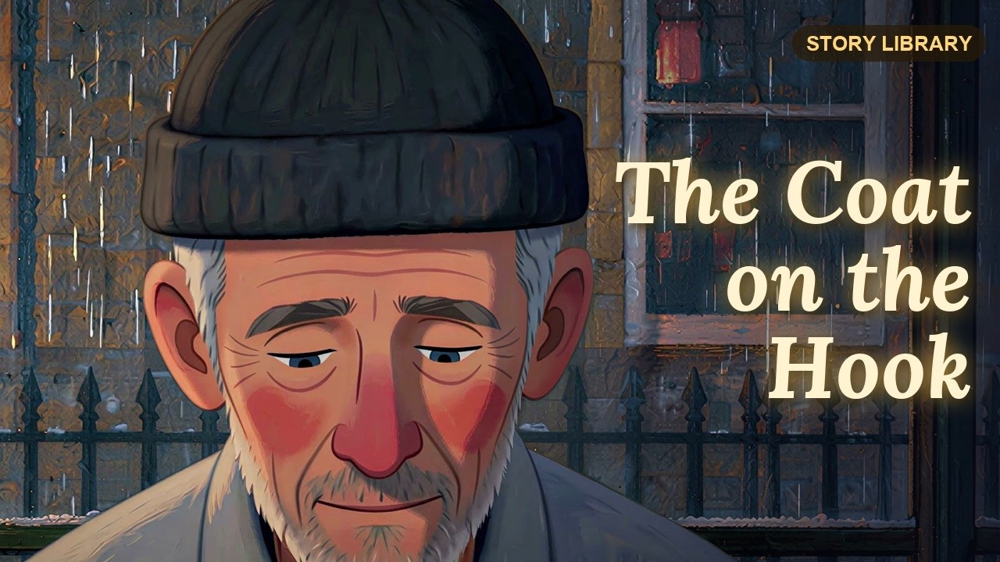
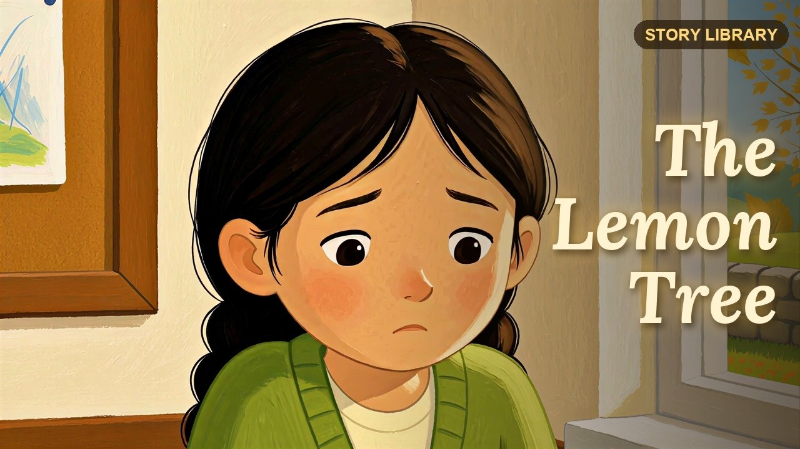
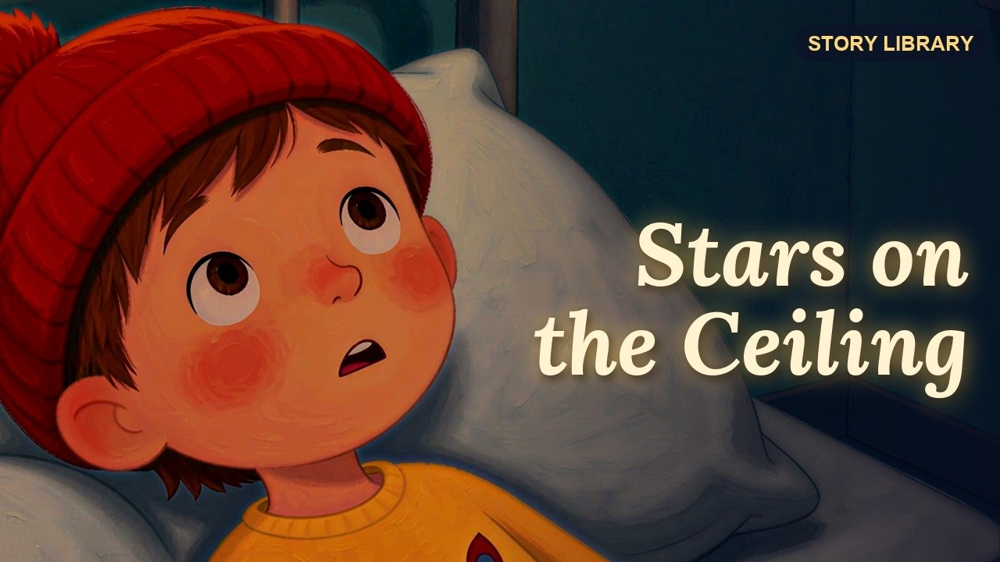

For Giving Tuesday, year-end appeals, galas and social media. No film crew, no actors, and nobody has to show their face.
Press play, with sound on.
A girl alone at a rainy bus stop, and the small kindness that changes her day. Watercolor, 43 seconds.
A mother, her newborn daughter, and a love that stays. Soft painted look, 28 seconds.
A Christmas tribute to older people and the lives they lived: the young footballer, the nurse, the soldier. Cinematic, 4½ minutes.

Every morning a girl sees the same cold man at her bus stop. At home, her late grandad’s warm coat still hangs by the door. No words, 4½ minutes.

A new girl can’t speak the language at her new school, so every day she draws her old home. Then one boy finds her drawings. No words, 6 minutes.

A scared boy in hospital, a tired dad, and a night nurse with a pocket full of stars. No words, 5 minutes.
A child in foster care, a mother in recovery, a teen who slept outside. Animation tells their story without showing their face or their name.
Everything happens in writing, so nothing gets lost and your team can review on its own time. No calls needed.
Send me your campaign, a real story (names can be changed) or just your mission. I reply with ideas.
A short script and a beat-by-beat plan. You change anything you like before I draw a single frame.
Style frames and characters in your colours, then a rough moving version with timing and music.
Animation, music and sound, delivered in 16:9 and 9:16, with two rounds of changes included.
From my animation clients around the world.
Excellent experience from start to finish. Harun communicated clearly and professionally, understood the brief very well, and was exceptionally transparent. Very reliable, analytical and professional throughout.
Amazing work! Exceeded my expectations! Captured the intensity and style of each character without the need for revisions. Would recommend. I'll definitely be buying more.
I'm extremely satisfied with the finished product. He takes great pride in his work, and strives to deliver an excellent order.
He did great work… I will work with him again.
For more than 3 years I’ve made animated stories for authors, producers and businesses around the world: kids’ series, music videos based on true stories, documentaries and brand films.
Now I make films for nonprofits: stories of kindness, recovery, family and hope. I keep US hours for messages, so you get answers during your workday.
Send me one real story from your work (names can be changed). I’ll turn it into a 20-second animated film, free. If you want a longer film later, we talk then.
I make a small number of free samples each month, so I reply in the order requests arrive. Or write to harun@harunvisuals.com.